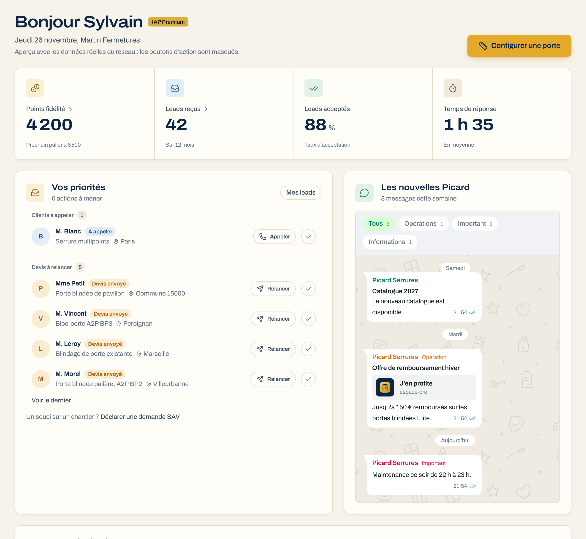
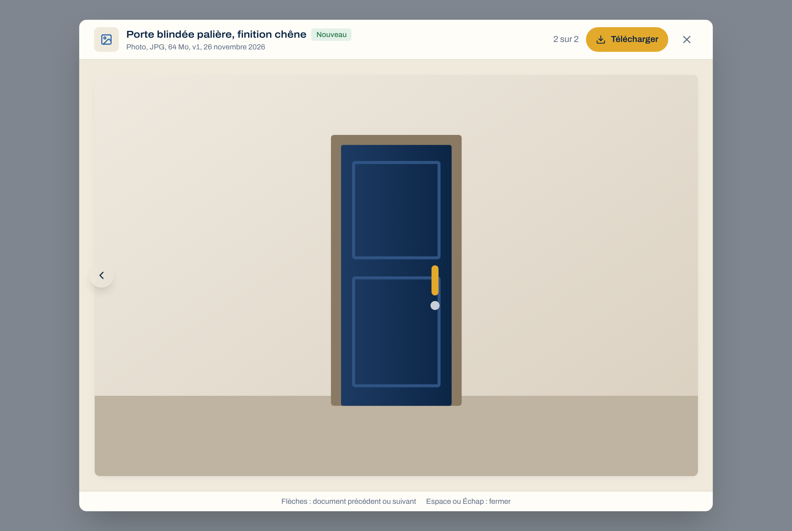
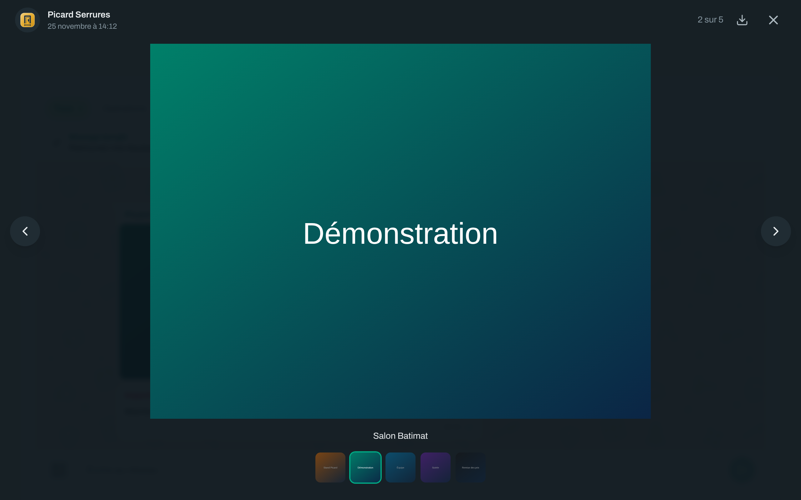
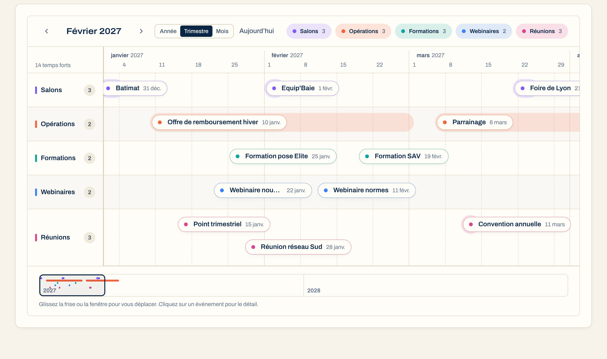
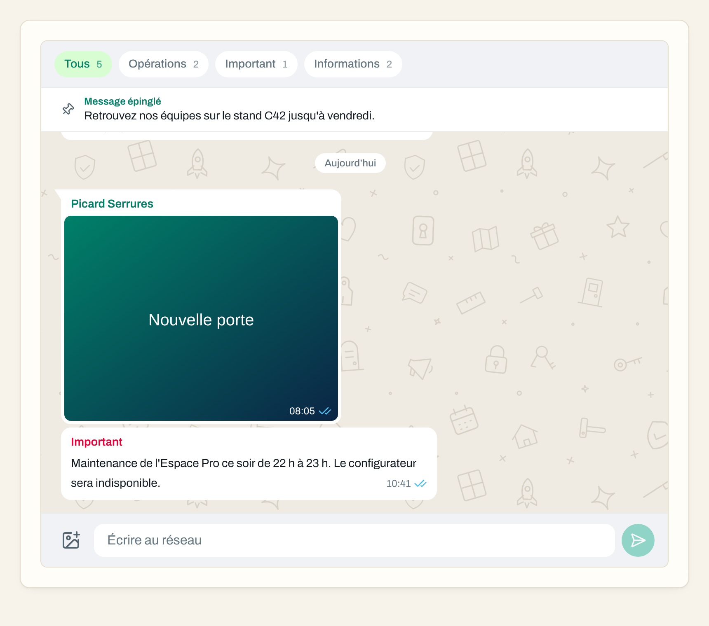
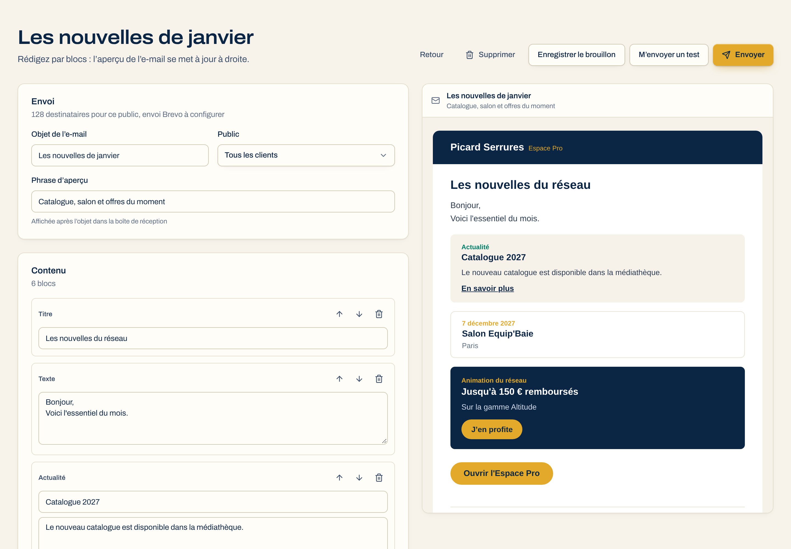
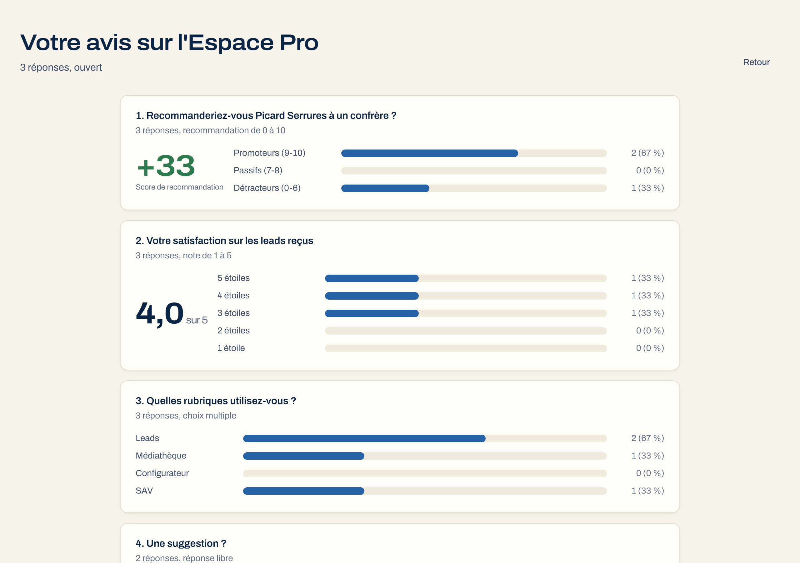
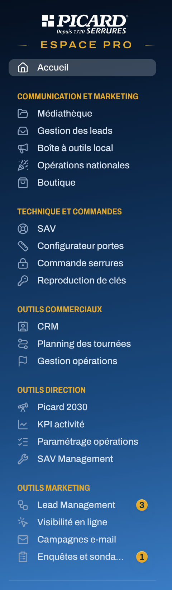

Tout l’écosystème Picard, dans une seule plateforme.
Leads, configurateur, SAV, commandes, documentation, opérations, fidélité et pilotage : l’Espace Pro réunit tout le réseau Picard Serrures autour d’un outil unique, pensé pour vendre plus, servir mieux et dépenser moins.
espace-pro-picard.vercel.app

Développer les ventesChaque demande devient une opportunité suivie jusqu’à la commande.
Fidéliser le réseauToutes les raisons de choisir Picard, chaque jour.
Optimiser les ressourcesMoins de saisies, d’envois et d’outils.
Pourquoi l’Espace Pro
Un réseau plus fort quand tout le monde travaille au même endroit
Aujourd’hui, l’information circule par e-mails, tableurs, appels et documents éparpillés. Chaque relais coûte du temps, fait perdre des opportunités et brouille l’image de marque. L’Espace Pro remplace cette dispersion par une expérience unique, cohérente et mesurable.
Réactivité commerciale
Les demandes arrivent qualifiées, au bon installateur, avec un délai de réponse encadré et des relances automatiques. Plus aucun lead ne dort dans une boîte mail.
Du temps gagné pour tous
Un seul identifiant, un seul outil : équipes et clients trouvent en quelques secondes ce qu’ils cherchaient hier dans cinq outils différents.
Une fidélisation durable
Points, boutique, opérations nationales, parrainage, enquêtes : l’installateur vit la marque au quotidien et a de vraies raisons de rester.
Un pilotage par la donnée
Chaque action laisse une trace : la direction suit l’activité, la transformation et le retour sur investissement en temps réel.
Le réseauDes leads, des outils de vente, une documentation à jour et un service réactif.
Les équipesMoins de tâches répétitives, des priorités claires, une vision complète du client.
La directionDes indicateurs fiables, des coûts maîtrisés, une stratégie déployée jusqu’au terrain.
Un outil unique pour le réseau, une expérience premium pour les installateurs, une maîtrise totale pour Picard.
Espace Pro Picard Serrures02
Le parcours client de bout en bout
De la demande du particulier à la fidélité de l’installateur
Chaque étape est accompagnée, chaque acteur est relié : client final, installateur, commercial, Lead Manager, SAV et direction.
1
La demande arrive
Formulaire du site, configurateur, appel : chaque demande entre dans l’Espace Pro, complète et horodatée.
Lead Management
2
Elle est qualifiée et orientée
Le Lead Manager évalue la température du projet et l’attribue au bon installateur du secteur grâce au zoning.
Lead Management, Zoning
3
L’installateur accepte en un clic
E-mail et SMS immédiats, compte à rebours visible, coordonnées du client débloquées à l’acceptation.
Gestion des leads
4
Il conseille, configure et chiffre
Configurateur, médiathèque et argumentaires pour convaincre et produire un devis juste, rapidement.
Configurateur portes, Médiathèque
5
La commande est passée et rapprochée
La commande est rattachée au lead : la transformation réelle et le chiffre d’affaires par canal sont mesurés.
Commandes Navision, Commande serrures
6
La pose et le service après-vente
Déclaration SAV en quelques minutes, photos à l’appui, suivi transparent jusqu’à la résolution.
SAV, SAV Management
7
La satisfaction est mesurée
Enquêtes automatiques auprès du client et de l’installateur : chaque retour devient un levier de progrès.
Enquêtes et sondages
8
La fidélité est récompensée
Points, boutique, opérations nationales et parrainage : plus l’installateur travaille avec Picard, plus il y gagne.
Boutique, Opérations nationales
Espace Pro Picard Serrures03
L’accueil
Le tableau de bord de chaque professionnel
Dès la connexion, chacun voit l’essentiel : ses priorités, les messages du réseau, ses indicateurs et l’agenda. Tout ce qui demande une action est mis en avant.
Accueil
Vos prioritésLeads à accepter avec compte à rebours, clients à rappeler, devis à relancer.
Le fil PicardLe canal officiel de la marque, avec photos, épinglage et filtres.
Vos indicateursPoints, leads reçus, taux d’acceptation et temps de réponse.
L’agenda du réseauSalons, formations et opérations dans une frise interactive.
Espace Pro Picard Serrures04
Une plateforme, cinq expériences
Chacun voit exactement ce dont il a besoin
L’Espace Pro s’adapte au rôle de chaque utilisateur : ses rubriques, son accueil, ses priorités. L’administrateur peut voir la plateforme avec les yeux de n’importe quel profil.
Installateurs et réseau IAP
Leads qualifiés du secteur, notifiés par e-mail et SMS
Un accueil qui affiche les priorités du jour
Configurateur, documentation, kits de communication locale
SAV, commandes et reproductions de clés au même endroit
Points, boutique et opérations pour être récompensés
Commerciaux (ATC)
Une vision complète de chaque client : activité, leads, SAV
CRM et planning des tournées
Gestion des opérations sur leur secteur
Des sujets de visite concrets à chaque rendez-vous
Lead Manager et marketing
Qualification, attribution, carte et zoning des leads
Campagnes e-mail, enquêtes et visibilité en ligne
Opérations nationales et parrainage en quelques clics
Statistiques de transformation et de satisfaction
SAV et qualité
Des demandes complètes dès le départ, photos comprises
Une file de traitement claire et des échanges tracés
Le pilotage des délais, des défauts et des coûts
Direction
Les KPI de l’activité en temps réel
Le plan stratégique Picard 2030 partagé et suivi
Le paramétrage des opérations commerciales
La maîtrise complète des droits et des contenus
Espace Pro Picard Serrures05
Les rubriques
Un écosystème complet, au service de tout le réseau
Communication et marketing
AccueilPriorités du jour, canal de messages officiel avec photos, agenda du réseau en frise interactive.
MédiathèqueCatalogues, notices, vidéos et photos par gamme et par produit, avec aperçu instantané.
Gestion des leadsLes demandes de devis du secteur, acceptées dans le délai puis suivies jusqu’à la pose.
Boîte à outils localKits et supports pour animer sa communication locale aux couleurs de Picard.
Opérations nationalesOffres, remboursements et parrainage, avec participation et suivi des dossiers en ligne.
BoutiqueLes points de fidélité convertis en récompenses, avec validation et suivi des commandes.
Technique et commandes
SAVDéclaration guidée, pièces jointes, échanges et suivi en temps réel de chaque demande.
Configurateur portesConfigurer une porte en quelques minutes et obtenir un chiffrage fiable.
Commande serruresSerrures, cylindres et pièces aux conditions du client, livraisons et factures, recommande en un clic.
Reproduction de clésDemandes de clés protégées dématérialisées, justificatifs joints, suivi jusqu’à l’expédition.
Médiathèque

Un document, un clic
Catalogues, notices, photos et vidéos s’ouvrent en aperçu instantané, comme sur un ordinateur : flèches pour passer au suivant, téléchargement en un geste. L’argumentaire est toujours à portée de main, en rendez-vous comme au bureau.
Espace Pro Picard Serrures06
Les rubriques
Des outils pour vendre, piloter et animer
Outils commerciaux
CRMFiche client complète, actions, contacts et historique partagés par toute l’équipe.
Planning des tournéesPréparer et optimiser ses visites, ne rien oublier sur le terrain.
Gestion opérationsDéployer les opérations chez ses clients, suivre la participation et les résultats.
Outils direction
Picard 2030Le plan stratégique : ambitions, chantiers, responsables et indicateurs partagés.
KPI activitéVentes, activité et performance par secteur, client et période.
Paramétrage opérationsConcevoir les opérations commerciales et suivre leur avancement sur le terrain.
SAV ManagementDélais, défauts récurrents, charge des intervenants, satisfaction et coût du SAV.
Outils marketing
Lead ManagementValidation, qualification, attribution, carte, zoning, envois et rapprochement avec les commandes.
Visibilité en ligneGoogle Ads, fréquentation du site, référencement naturel et présence dans les moteurs d’IA.
Campagnes e-mailNewsletters composées par blocs, aperçu fidèle, envoi ciblé par public.
Enquêtes et sondagesQuestionnaires ciblés, réponses dans l’espace, résultats et score de recommandation.
Le fil Picard

La marque au plus près du réseau
Lancements, salons, chantiers remarquables : les messages et les photos partagés par Picard s’affichent en plein écran, à la manière d’une messagerie. Le réseau suit la marque en temps réel.
Espace Pro Picard Serrures07
En images
Une expérience moderne, claire et agréable
Chaque écran a été pensé pour aller à l’essentiel : lisible, rapide, et cohérent d’une rubrique à l’autre.
Agenda du réseau

Agenda en frise : salons, opérations et formations, zoom année, trimestre ou mois, code couleur par type.
Le fil Picard

Canal officiel : messages, photos en visionneuse, épinglage, filtres, comme une messagerie.
Campagnes e-mail

Campagnes e-mail : rédaction par blocs, insertion des actualités, aperçu fidèle avant envoi.
Enquêtes et sondages

Enquêtes : score de recommandation, notes, choix et commentaires en un coup d’œil.
Espace Pro Picard Serrures08
Optimisation des coûts et des ressources
Faire plus avec les mêmes équipes
L’Espace Pro automatise ce qui coûte du temps sans créer de valeur, et concentre les équipes sur ce qui fait vendre : le conseil, la relation et le terrain.
Moins de ressaisies
Une information saisie une fois est partagée par tous : lead, client, commande et SAV sont reliés. Fini les doubles saisies.
Moins d’appels et d’e-mails
Statuts en ligne, notifications automatiques, échanges SAV centralisés : les relances et les échanges dispersés disparaissent.
Moins d’impression et d’envois
Catalogues, notices et kits sont en ligne et toujours à jour. Plus de documents obsolètes ni d’envois postaux.
Moins d’outils à maintenir
Une seule plateforme remplace des solutions dispersées : un socle, une base de données, un accès.
Un budget marketing piloté
Chaque lead est suivi jusqu’à la commande : on investit là où le retour est prouvé, et la facturation des leads est paramétrable.
Des équipes recentrées
Lead Manager, commerciaux et SAV disposent de files de travail claires et priorisées : plus d’impact par personne.
DéciderDes indicateurs fiables pour arbitrer budgets et priorités.
AméliorerChaque retour alimente un cycle d’amélioration continue.
Espace Pro Picard Serrures09
Fidélisation et expérience
Donner au réseau toutes les raisons de choisir Picard
Un installateur fidèle est un installateur bien équipé, bien informé, bien servi et récompensé. L’Espace Pro réunit ces quatre leviers dans une expérience premium, à l’image de la marque.
Bien équipé
Configurateur, documentation, kits de communication locale et commande en ligne : tout pour vendre Picard plus facilement.
Bien informé
Canal officiel, agenda des salons et formations, nouveautés produits : le réseau vit au rythme de la marque.
Bien servi
Leads qualifiés, SAV réactif et transparent, clés simplifiées : un service qui fait gagner du temps et de la crédibilité.
Récompensé
Points, boutique, opérations nationales, remboursements et parrainage : la fidélité devient concrète.
Niveaux IAP valorisés
Elite, Premium et Officiel bénéficient d’avantages et de contenus adaptés.
Écoute permanente
Enquêtes et score de recommandation : la voix du réseau pilote les améliorations.
Image de marque
Une expérience moderne et soignée qui positionne Picard en référence.
Plus l’installateur utilise l’Espace Pro, plus il vend Picard, et plus il est récompensé : un cercle vertueux.
Espace Pro Picard Serrures10
Une base solide
Moderne, sûr et disponible partout
Construit sur des technologies actuelles et évolutives, avec une exigence de sécurité et de simplicité à chaque écran.
Sécurité par rôleChacun ne voit que ses données ; les droits sont contrôlés par la base et seul l’administrateur paramètre.
Disponible partoutOrdinateur, tablette et téléphone ; l’Espace Pro s’installe sur l’écran d’accueil comme une application.
Pensé pour le terrainNotifications instantanées, photos de chantier, consultation en déplacement.
Évolutif sans ruptureChaque nouvelle rubrique s’ajoute au même socle, sans changer d’outil.

L’Espace Pro : développez vos ventes, fidélisez votre réseau, pilotez chaque euro.